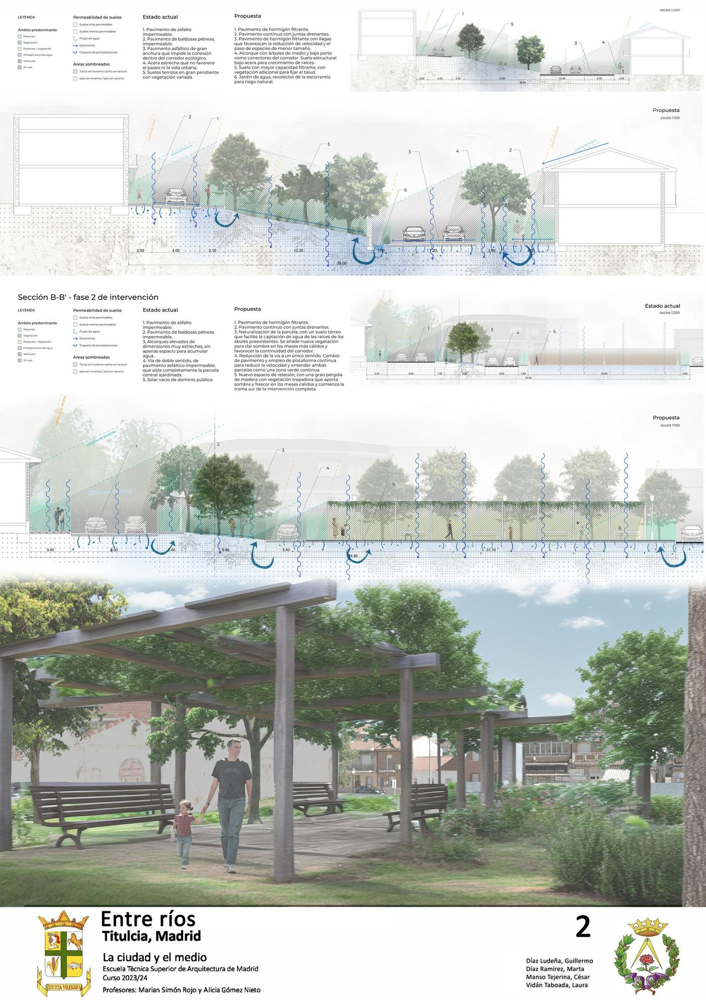

Entre Ríos
El proyecto crea un corredor ecológico que une las riberas de los ríos Jarama y Tajuña a su paso por Titulcia, facilitando la movilidad sostenible y mejorando la calidad ambiental y urbana. Responde a una fragmentación del entorno natural que interrumpe los hábitats y limita el movimiento de especies entre riberas.
The project creates an ecological corridor joining the banks of the Jarama and Tajuña rivers as they cross Titulcia, enabling sustainable mobility and improving environmental and urban quality. It responds to a fragmentation of the natural setting that interrupts habitats and limits the movement of species between the riverbanks.
- Conexión natural–urbanaNatural–urban connection
- Mejorar la permeabilidad del sueloImprove soil permeability
- Biodiversidad: restauración de especies autóctonasBiodiversity: restoring native species
- Integración paisajística y social: senderos y ciclovíasLandscape & social integration: paths and cycle lanes
- Sostenibilidad y educación ambientalSustainability & environmental education
